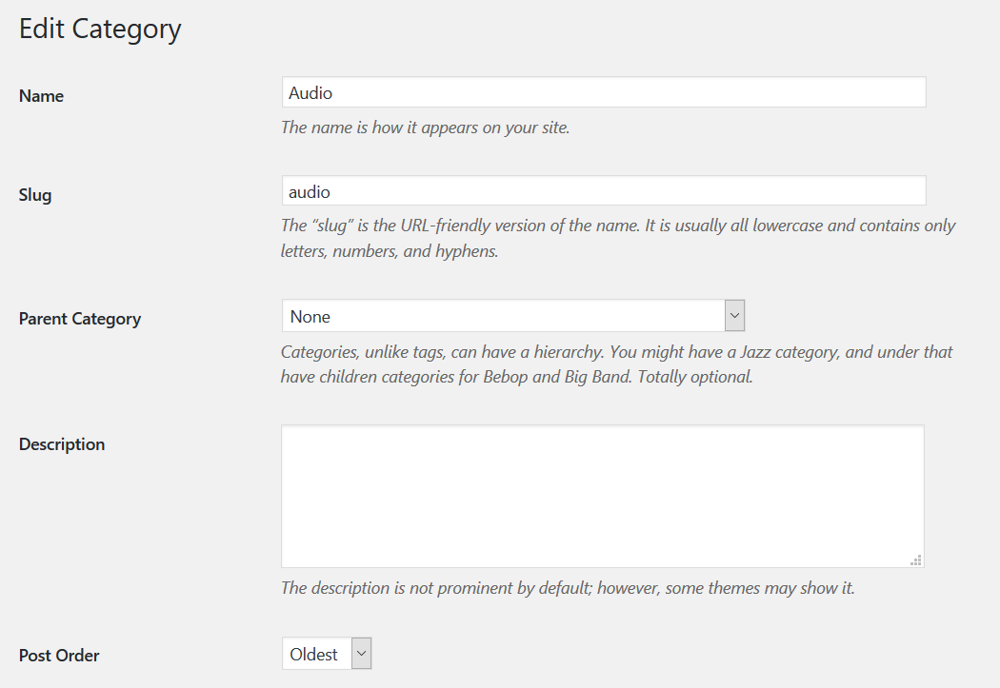

2 Ways to Reverse Post Order from a Specific Category in WordPress (With and Without a Plugin)
I had a client that needed to build an archive website for a museum. Needless to say, the museum had thousands of materials, seperated into categories and subcategories. Some of the subcategories needed to have a custom post order on the category archive page (by title or by published date in ascending order), while others should have been ordered with the default post order (date descending). In this tutorial, I will show you two ways how to sort the posts from a certain category archive page like a pro!
Reverse Post Order for a Certain Category Without a Plugin
If you want to reverse the post order by category with a plugin, skip the following paragraph. Now, for those of you, who are not afraid to touch php code, I will show you how you can do a custom post sort. Let’s say we have 2 categories: interviews and documents. Open your child theme’s functions.php and paste the following snippet:
/* Reverse default date descending order for specific categories */
function change_category_order( $query ) {
//Sort all posts from category with id=19 (interviews) by date asc order
if($query->is_category('19') && $query->is_main_query()){
$query->set( 'order', 'ASC' );
}
//Sort all posts from category with id=15 (documents) by title and then by date asc order
elseif($query->is_category('15') && $query->is_main_query()){
$query->query_vars['orderby'] = 'name';
$query->query_vars['order'] = 'ASC';
}
}
add_action( 'pre_get_posts', 'change_category_order' );
The above code changes the post order for categories with id-s 15 and 19. All the interviews are sorted in a chronological order (from oldest to newest) and all the documents are sorted by title (from A to Z). Do not forget to change the category id-s with the ones you have. You can easily check which is the correct category id by going to the category archive page and hover the mouse on the edit category button in the WordPress admin black top bar (upper right corner).
P.S. If you need a custom sort (for example by location or by date as a custom field) you can accomplish this by using WordPress custom fields. This is a very nice feature that lets you assign custom fields (known as metadata) to posts. They are out of the scope of this article, but you can read more about them here.
Reverse Post Order for a Certain Category With a Plugin
If you do not want to get your hands dirty with code, you can use a very lightweight plugin that I created, that lets you control the post order for each category you create or edit. This is done from the WordPress dashboard, so it is very user-friendly and convenient and can easily be done by less tech-savy users. In the WordPress dashboard, go to plugins -> add new and install Post Order By Category plugin.
After you have installed the plugin, all you need to do is to edit the category you want to sort. Go to posts->categories and you will notice a new field just below the category description textarea called post order. The dropdown option list allows you to change the post order by date ascending or date descending.
Currently, the plugin can reverse the posts only by date but in future I might add additional options. For now, If you need more flexibility (sort the posts by title), I suggest you to read the above paragraph as well.
Support for Custom Post Types
The plugin can also reverse post order within category for custom post types (not only for posts)! You can reverse the post order of category archives for any custom post types (projects, portfolio items, testimonials, etc.), as long as you use categories as a default taxonomy. However, to display a category archive for custom post types, you also need to extend your child theme’s functions.php. Here is an example code that lets you do that:
function my_query_post_type($query) {
if ( is_category() && ( ! isset( $query->query_vars['suppress_filters'] ) || false == $query->query_vars['suppress_filters'] ) ) {
/*Change projects with your custom post type*/
$query->set( 'post_type', array( 'post', 'projects' ) );
return $query;
}
}
add_filter('pre_get_posts', 'my_query_post_type');

Happy blogging!